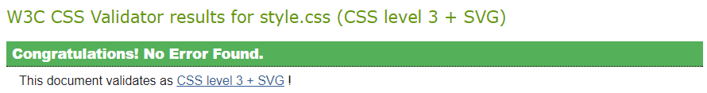
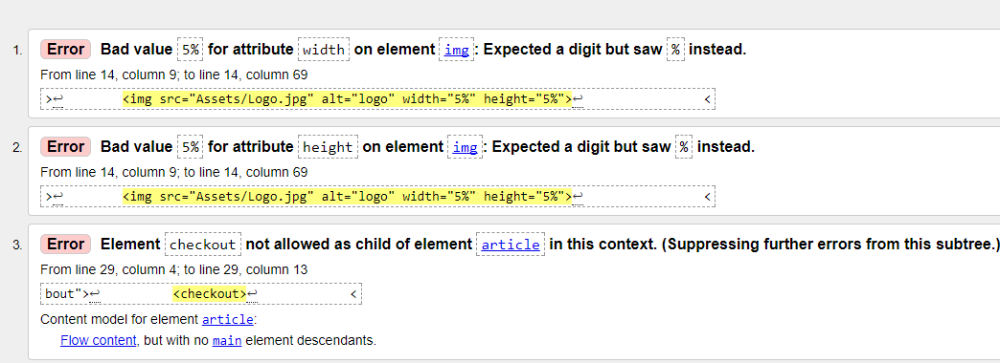
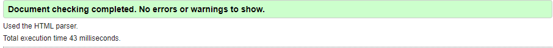
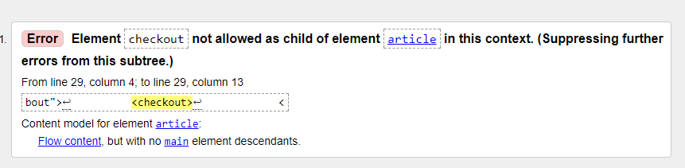

Critical Log
Web standards
Web standards were defined by an intonational comity know as W3C. The idea of this is to keep a main standard on how the web gets developed so that all may access it and use it. The main idea behind this is to make it so that all browsers and devices can access as there are some browsers and devices that have their own unique coding features that some site may take advantage of.
The benefits of having this are easy to spot as it means that websites have as little code as possible and still work to the extent that they are wanted to mean that less work must be put into the website. It also increases the accessibility of most sites on the internet as all devices can access the same sites leaving little room for exclusivity. This is because if there wasn’t a standard then you would have to write entirely different website just so that all browsers can access the same one where as with this standard you only need to add a few lines in a CSS file. On top of this it also keeps web related formats compatible with each other such as XML and HTTPS encryption.
However, the problem with this is that older machines will not be able to access the lasts versions of browsers meaning that they will never be able to get the same experience as the newer machines. And on top of this we get issues with the newer issues of web standards as are becoming stricter and stricter flagging code that doesn’t follow certain ways and styles of coding to ensure that in can be universally understood. This is evident in the thins such as not having a header tag in an article, this would be flagged as wrong but many people believe that this is the correct way of doing it.
Techniques Used
I used a decent amount of techniques during the creation of this website. This included CSS3, HTML 5 and JavaScript. I used these in conjunction to ensure that my website had a smooth experience and allowed to user to have a stress-free visit. JavaScript was used to create the functions of all the buttons on the page such as adding to a variable and saving it in local storage as well allowing the user to mute the song playing in the background and remember their selection so that the song wouldn’t get annoying a repetitive. JavaScript was also used to make a basic cost calculator to display the total cost of the Items as a collective. The final thing that I did was to make a working canvas that could be drawn on and saved. This allowed the user to save their signature to the website for return visits as well as clear and load whatever was on the canvas. HTML 5 was used to make most of the front of the page such as the writing and the inserting of images along with interacting with the JavaScript to execute certain functions. The HTML 5 also uses the CSS3 to keep to a consistent style and to produce effects such as a picture fading out on hovering the mouse over it.
Challenges Presented
I had many issues while creating this site and a lot of these issues have take up a lot time and effort. One of the main challenges that I was presented with was making it so the canvas that saved what was drawn and it and could load it back up. I had many attempts at this, but I could never get it to work until I found a way of storing the lines and then replacing them upon the canvas when loaded. Another major challenge was getting all the CSS to be correct so that the site looked neat and the user would have a smooth and familiar experience while browsing the site, to come over this challenge it took a lot of fiddling with the resizes and the styles. I also was stumped on how to make a canvas work for phones, but I spent too much time on this and settled for all the other feature working.
Website: https://nutsmonkey.github.io
W3C HTML and CSS Validation
CSS validation
Index page(HTML)

Store Page(HTML)
After Amendments(Index)
After Amendments(Store)
Conclusion
The errors that were flagged by the scanner seemed to have no impact on my website as all browsers that I tested my site on worked on these pieces of code and they all came out with the same output of the website. I did make some changes to it to make it a bit better by add the change size to the style sheet.
References
W3C (2017) W3C Standards: https://www.w3.org/standards/ (accessed 9 January 2018)
W3C (2017) About W3C: https://www.w3.org/Consortium/ (accessed 9 January 2018)